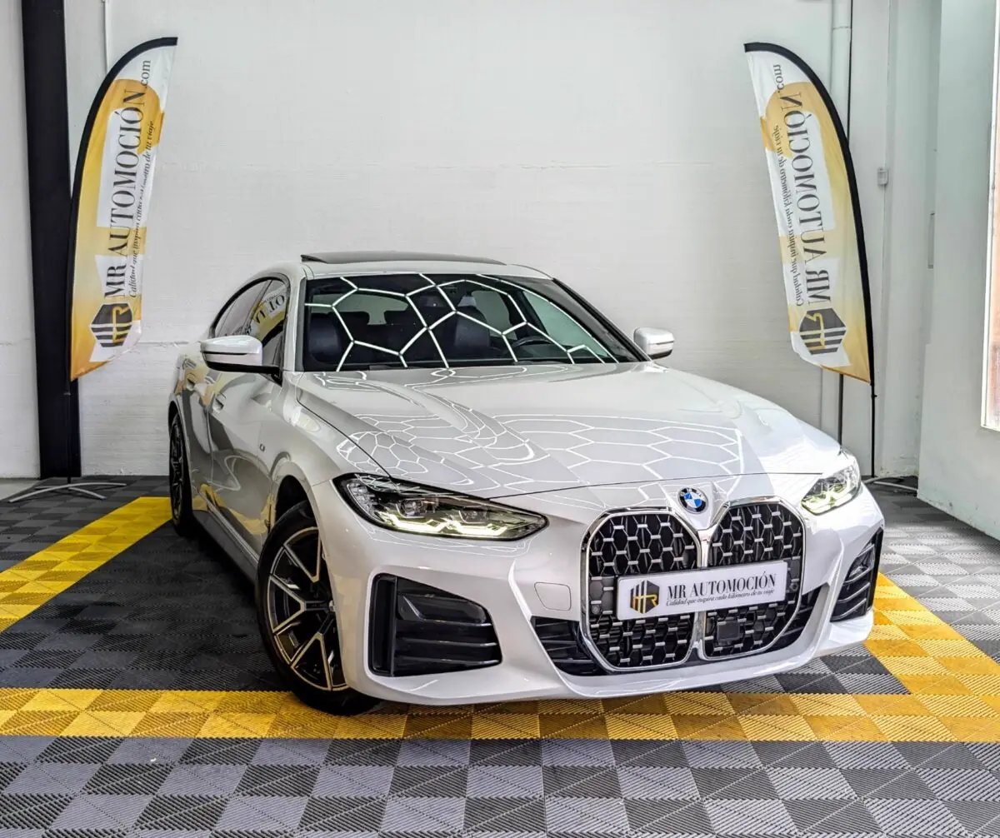

1 / 24Ponemos a la venta este exclusivo BMW 420i Gran Coupé con acabado M Sport. Una berlina deportiva de 5 puertas en su última generación, matriculada en 2022 y con 115.500 km . Esta unidad está propulsada por un eficiente bloque de gasolina de 4 cilindros en línea y 2.0 litros (1.998 cc) con tecnología TwinPower Turbo , capaz de entregar 184 CV (135 kW) y 300 Nm de par motor máximo.
Su rendimiento se gestiona a través de una caja de cambios automática deportiva Steptronic de 8 velocidades con levas en el volante, transmitiendo toda la fuerza al asfalto mediante la clásica tracción trasera de BMW con dirección deportiva variable. Además, cuenta con el distintivo ambiental C de la DGT.
Todo ello en una configuración premium impecable que combina a la perfección el color metalizado Mineralweiß con el equipamiento deportivo más completo de la marca. Paquete deportivo M Sport y estética exterior: Acabado M Sport completo Paquete aerodinámico M: paragolpes específicos delantero/trasero y taloneras laterales M.
Pintura exterior: Mineralweiß Metallic, blanco metalizado de alta densidad. Llantas: llantas de aleación M Aerodynamikräder de 18 pulgadas (diseño 858 M Bicolor) con pernos de seguridad. Suspensión deportiva M: chasis adaptado dinámicamente para un guiado preciso. Molduras exteriores: Shadow Line de brillo intenso BMW Individual en marcos y contornos.
Acristalamiento de protección solar: cristales traseros oscurecidos de fábrica con filtro térmico. Confort y Exclusividad Interior: Techo de cristal eléctrico: techo solar panorámico practicable con apertura e inclinación eléctrica. Asientos deportivos M: tapizados en combinación Alcantara y Sensatec negro con costuras de contraste en color azul.
Ajustes avanzados: asientos delanteros con regulación eléctrica y función de memoria para el conductor, calefacción integrada y ajuste del ancho de respaldo electrónico. Volante de cuero M: diseño de tres radios multifunción con levas de cambio. Molduras interiores: acabados de consola y salpicadero en Aluminium Tetragon M de textura técnica.
Techo interior: guarnecido del techo BMW Individual en color antracita. Luz ambiental: iluminación LED interior configurable en múltiples tonalidades. Sistema de acceso confort: apertura, cierre y arranque sin llave por proximidad mediante las manetas exteriores. Tecnología, Infoentretenimiento y Conectividad: BMW Live Cockpit Plus: puesto de mando digital con pantalla de alta resolución y cuadro de instrumentos avanzado.
Connected Package Professional: suite completa de servicios digitales en la nube y conectividad avanzada. Servicios ConnectedDrive & Teleservices: servicios remotos y llamada de emergencia legal integrada. Preparación remota: funciones Bluetooth y Wi-Fi habilitadas con preparación para actualizaciones remotas de software.
Multimedia: sintonizador de radio digital DAB y controlador IDrive en consola central. Seguridad y Asistentes a la Conducción: Asistente de estacionamiento (Parking Assistant): sistema de cámaras y sensores con maniobra de aparcamiento automatizada. Active Guard Plus: asistente activo que incluye advertencia de cambio de carril, aviso de colisión frontal con intervención de frenado y asistente de límite de velocidad.
Control de crucero dinámico: regulador de velocidad con función de frenado automático. Paquete de retrovisores: espejos interiores y exteriores térmicos, con plegado eléctrico y función antideslumbramiento automática. Climatizador automático: bizona de alta eficiencia. Seguridad activa: indicador de presión de neumáticos independiente, kit de reparación de pinchazos y protección activa para peatones.
TU COMPRA SEGURA CON MRAutomoción: ✅ Revisión mecánica rigurosa: vehículo completamente inspeccionado con mantenimientos al día. ✅ Kilometraje certificado . ✅ Garantía completa: de 1 año (12 meses) incluida en el precio final. ✅ Transferencia incluida
| Marca | BMW |
|---|---|
| Modelo | BMW 420i Gran Coupé 184CV 2022 |
| Año | None 2022 |
| Kilómetros | 115.500 km |
| Combustible | Gasolina |
| Cambio | Automático |
| Potencia | 184 CV |
| Garantía | 1 Año |
Quizá también te encaje